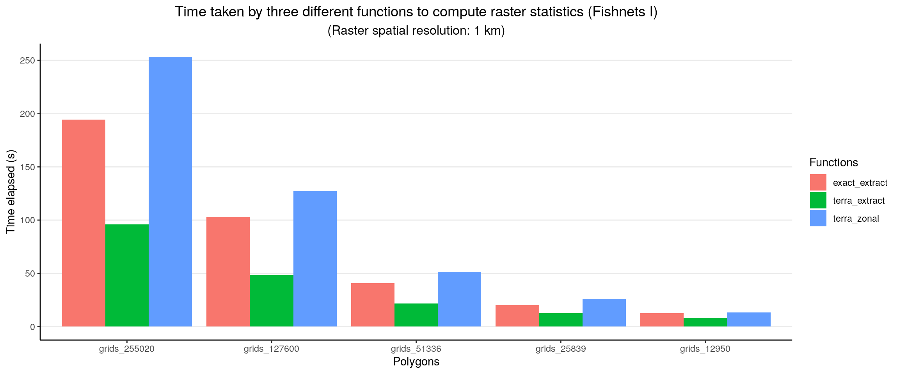
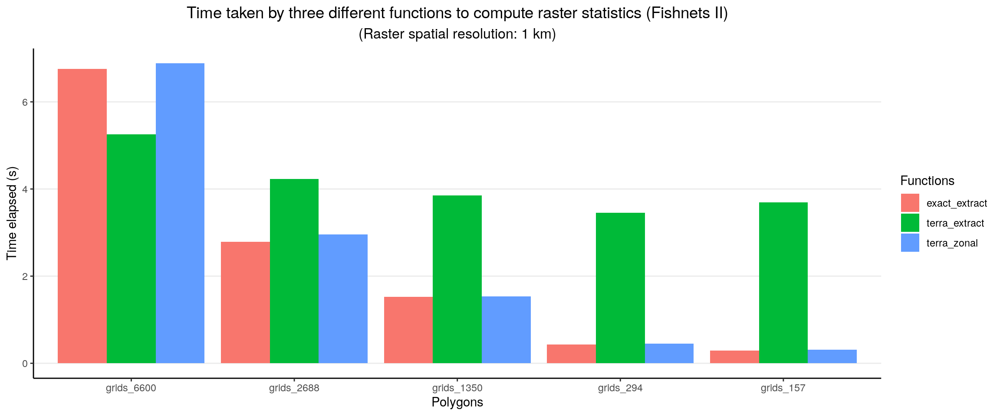

Last updated: 2022-06-10
Checks: 6 1
Knit directory: masters-thesis/
This reproducible R Markdown analysis was created with workflowr (version 1.7.0). The Checks tab describes the reproducibility checks that were applied when the results were created. The Past versions tab lists the development history.
The R Markdown is untracked by Git. To know which version of the R Markdown file created these results, you’ll want to first commit it to the Git repo. If you’re still working on the analysis, you can ignore this warning. When you’re finished, you can run wflow_publish to commit the R Markdown file and build the HTML.
Great job! The global environment was empty. Objects defined in the global environment can affect the analysis in your R Markdown file in unknown ways. For reproduciblity it’s best to always run the code in an empty environment.
The command set.seed(20220406) was run prior to running the code in the R Markdown file. Setting a seed ensures that any results that rely on randomness, e.g. subsampling or permutations, are reproducible.
Great job! Recording the operating system, R version, and package versions is critical for reproducibility.
Nice! There were no cached chunks for this analysis, so you can be confident that you successfully produced the results during this run.
Great job! Using relative paths to the files within your workflowr project makes it easier to run your code on other machines.
Great! You are using Git for version control. Tracking code development and connecting the code version to the results is critical for reproducibility.
The results in this page were generated with repository version 62f90af. See the Past versions tab to see a history of the changes made to the R Markdown and HTML files.
Note that you need to be careful to ensure that all relevant files for the analysis have been committed to Git prior to generating the results (you can use wflow_publish or wflow_git_commit). workflowr only checks the R Markdown file, but you know if there are other scripts or data files that it depends on. Below is the status of the Git repository when the results were generated:
Ignored files:
Ignored: .RData
Ignored: .Rhistory
Ignored: .Rproj.user/
Untracked files:
Untracked: analysis/01_zonal_vs_extract_vs_exactextractr_WDPA.Rmd
Untracked: analysis/02_zonal_vs_extract_vs_exactextractr_Fishnets.Rmd
Untracked: analysis/03_sequential_vs_parallelization_WDPA.Rmd
Untracked: analysis/04_sequential_vs_parallelization_Fishnets.Rmd
Untracked: code/exact_extract.R
Untracked: code/mapme_biodiversity.R
Untracked: code/terra_extract.R
Untracked: code/terra_zonal.R
Untracked: data/fishnet_polygons/
Untracked: data/results/01_zon_v_textr_v_extr.csv
Untracked: data/results/02_fishnet_benchmarks/
Untracked: data/results/03_seq_v_par_wdpa/
Untracked: data/results/04_seq_v_par_fishnets/
Unstaged changes:
Deleted: analysis/fishnets_benchmarks.Rmd
Modified: analysis/index.Rmd
Deleted: analysis/raster_parallel.Rmd
Deleted: analysis/raster_parallel_wdpa.Rmd
Deleted: analysis/terra_exact_benchmarks.Rmd
Deleted: data/fishnet_10000_sqkm.gpkg
Deleted: data/fishnet_1000_sqkm.gpkg
Deleted: data/fishnet_100_sqkm.gpkg
Deleted: data/fishnet_10_sqkm.gpkg
Deleted: data/fishnet_200_sqkm.gpkg
Deleted: data/fishnet_25_sqkm.gpkg
Deleted: data/fishnet_5000_sqkm.gpkg
Deleted: data/fishnet_500_sqkm.gpkg
Deleted: data/fishnet_50_sqkm.gpkg
Deleted: data/fishnet_5_sqkm.gpkg
Deleted: data/results/fishnet_benchmarks/time10.csv
Deleted: data/results/fishnet_benchmarks/time100.csv
Deleted: data/results/fishnet_benchmarks/time1000.csv
Deleted: data/results/fishnet_benchmarks/time10000.csv
Deleted: data/results/fishnet_benchmarks/time200.csv
Deleted: data/results/fishnet_benchmarks/time25.csv
Deleted: data/results/fishnet_benchmarks/time5.csv
Deleted: data/results/fishnet_benchmarks/time50.csv
Deleted: data/results/fishnet_benchmarks/time500.csv
Deleted: data/results/fishnet_benchmarks/time5000.csv
Deleted: data/results/rasters/bolivia/ee_00005.csv
Deleted: data/results/rasters/bolivia/ee_0001.csv
Deleted: data/results/rasters/bolivia/ee_001.csv
Deleted: data/results/rasters/bolivia/ee_01.csv
Deleted: data/results/rasters/bolivia/final_00005.csv
Deleted: data/results/rasters/bolivia/final_0001.csv
Deleted: data/results/rasters/bolivia/final_001.csv
Deleted: data/results/rasters/bolivia/final_01.csv
Deleted: data/results/rasters/bolivia/te_00005.csv
Deleted: data/results/rasters/bolivia/te_0001.csv
Deleted: data/results/rasters/bolivia/te_001.csv
Deleted: data/results/rasters/bolivia/te_01.csv
Deleted: data/results/rasters/bolivia/tz_00005.csv
Deleted: data/results/rasters/bolivia/tz_0001.csv
Deleted: data/results/rasters/bolivia/tz_001.csv
Deleted: data/results/rasters/bolivia/tz_01.csv
Deleted: data/results/rasters/ee_00005.csv
Deleted: data/results/rasters/ee_0001.csv
Deleted: data/results/rasters/ee_001.csv
Deleted: data/results/rasters/ee_01.csv
Deleted: data/results/rasters/final_00005.csv
Deleted: data/results/rasters/final_0001.csv
Deleted: data/results/rasters/final_001.csv
Deleted: data/results/rasters/final_001_wo_tz8-16.csv
Deleted: data/results/rasters/final_01.csv
Deleted: data/results/rasters/te_00005.csv
Deleted: data/results/rasters/te_0001.csv
Deleted: data/results/rasters/te_001.csv
Deleted: data/results/rasters/te_01.csv
Deleted: data/results/rasters/tz_00005.csv
Deleted: data/results/rasters/tz_0001.csv
Deleted: data/results/rasters/tz_001.csv
Deleted: data/results/rasters/tz_01.csv
Note that any generated files, e.g. HTML, png, CSS, etc., are not included in this status report because it is ok for generated content to have uncommitted changes.
There are no past versions. Publish this analysis with wflow_publish() to start tracking its development.
There are several ways and techniques to process raster datasets - using different packages or the functionalities provided by those packages. Depending on the package and their functions, the time taken to process the rasters also varies accordingly. So, this study will focus on three important functions which are used widely to process rasters for three different types of polygons.
Let’s see how these three different aoi polygons look like:
my_mapThe raster used in this study is worldpop global population raster from year 2020.
Lets see the properties of raster:
population_rasterclass : SpatRaster
dimensions : 18720, 43200, 1 (nrow, ncol, nlyr)
resolution : 0.008333333, 0.008333333 (x, y)
extent : -180.0012, 179.9987, -72.00042, 83.99958 (xmin, xmax, ymin, ymax)
coord. ref. : lon/lat WGS 84 (EPSG:4326)
source : global_mosaic2020.tif
name : global_mosaic2020 result.plot
Similarly, lets see how the functions behave when the area of each polygon gets bigger.
Let’s see how these three different aoi polygons look like:
my_map2result.plot2
sessionInfo()R version 3.6.3 (2020-02-29)
Platform: x86_64-pc-linux-gnu (64-bit)
Running under: Ubuntu 18.04.6 LTS
Matrix products: default
BLAS: /usr/lib/x86_64-linux-gnu/openblas/libblas.so.3
LAPACK: /usr/lib/x86_64-linux-gnu/libopenblasp-r0.2.20.so
locale:
[1] LC_CTYPE=C.UTF-8 LC_NUMERIC=C LC_TIME=C.UTF-8
[4] LC_COLLATE=C.UTF-8 LC_MONETARY=C.UTF-8 LC_MESSAGES=C.UTF-8
[7] LC_PAPER=C.UTF-8 LC_NAME=C LC_ADDRESS=C
[10] LC_TELEPHONE=C LC_MEASUREMENT=C.UTF-8 LC_IDENTIFICATION=C
attached base packages:
[1] stats graphics grDevices utils datasets methods base
other attached packages:
[1] magrittr_2.0.3 rmarkdown_2.11 plotly_4.9.3
[4] RColorBrewer_1.1-2 htmltools_0.5.2 scales_1.1.1
[7] ggsci_2.9 leaflet.extras2_1.1.0 leaflet.extras_1.0.0
[10] forcats_0.5.1 stringr_1.4.0 dplyr_1.0.9
[13] purrr_0.3.4 readr_2.1.2 tidyr_1.2.0
[16] tibble_3.1.7 ggplot2_3.3.4 tidyverse_1.3.1
[19] exactextractr_0.7.2 leaflet_2.0.4.1 terra_1.5-21
[22] sf_1.0-7 workflowr_1.7.0
loaded via a namespace (and not attached):
[1] fs_1.5.0 lubridate_1.7.10 httr_1.4.3
[4] rprojroot_2.0.2 tools_3.6.3 backports_1.2.1
[7] bslib_0.2.5.1 utf8_1.2.2 R6_2.5.1
[10] KernSmooth_2.23-20 lazyeval_0.2.2 DBI_1.1.2
[13] colorspace_2.0-1 raster_3.5-12 withr_2.4.2
[16] sp_1.4-6 tidyselect_1.1.2 processx_3.5.2
[19] compiler_3.6.3 git2r_0.28.0 cli_3.3.0
[22] rvest_1.0.2 xml2_1.3.3 labeling_0.4.2
[25] sass_0.4.0 classInt_0.4-3 callr_3.7.0
[28] proxy_0.4-26 digest_0.6.29 pkgconfig_2.0.3
[31] highr_0.8 dbplyr_2.1.1 fastmap_1.1.0
[34] htmlwidgets_1.5.3 rlang_1.0.2 readxl_1.3.1
[37] rstudioapi_0.13 farver_2.1.0 jquerylib_0.1.4
[40] generics_0.1.2 jsonlite_1.8.0 crosstalk_1.1.1
[43] Rcpp_1.0.8.3 munsell_0.5.0 fansi_1.0.3
[46] lifecycle_1.0.1 stringi_1.7.6 whisker_0.4
[49] yaml_2.2.1 grid_3.6.3 promises_1.2.0.1
[52] crayon_1.5.1 lattice_0.20-45 haven_2.3.1
[55] hms_1.1.1 knitr_1.34 ps_1.5.0
[58] pillar_1.7.0 codetools_0.2-18 reprex_2.0.0
[61] glue_1.6.2 evaluate_0.14 getPass_0.2-2
[64] leaflet.providers_1.9.0 data.table_1.14.2 modelr_0.1.8
[67] vctrs_0.4.1 tzdb_0.1.2 httpuv_1.6.1
[70] cellranger_1.1.0 gtable_0.3.0 assertthat_0.2.1
[73] xfun_0.24 broom_0.7.6 e1071_1.7-9
[76] later_1.2.0 viridisLite_0.4.0 class_7.3-20
[79] units_0.8-0 ellipsis_0.3.2